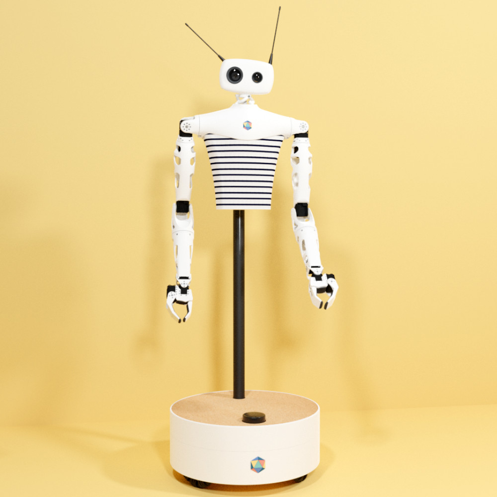

Een lift dient voor het versimpelen van het leven van de mens. Mensen worden steeds luier, dikker en daardoor zwaarder. Het lopen op de trap naar boven of beneden is leuk en aardig,
maar wat nou als dat je uit put of je moet 10 koffers naar boven of beneden tillen. Totaal uitputtend!. Gelukkig bestaat er een lift, het versimpelen van het mensen leven door sneller en makkelijk
verticaal van punt a naar b te gaan. Om de lift werkend te krijgen heb je kabels nodig die de liftkooi verbind met het tegengewicht. De kabels zitten om de schijven die de liftkooi verplaatsen.
De schijven worden aangedreven door motors en zo komt een lift in beweging.
Een lift komt alleen in beweging wanneer je op een knop drukt. Wanneer je per ongeluk een verkeerde knop indrukt bijvoorbeeld de verkeerde verdieping dan kan je die niet weer annuleren.
Je stopt dan op die verdieping en de deuren zullen opengaan. Dit betekent ook dat mensen buiten de lift ook op de knoppen kan drukken om zo de lift te laten stoppen op de verdieping waar ze in kunnen stappen.
Als er mensen zijn die van buiten af op elke verdieping de lift knoppen in druk stopt de lift ook op elke verdieping dit is zeer kinderachtig.
Als de lift stil staat is het soort van in rustmodus oftewl de lift is aan het slapen. wanneer er op een knop wordt gedrukt wordt de lift weer wakker en moet dan weer aan het werk.
Het moet weer de luie wezens dragen naar een ander locatie.
Onderzoek
Een robot met een eigen denkvermogen. Je denkt al gauw aan AI’s, maar wat nou als het robot een robot is die een menselijk denkvermogen heeft. Klinkt best eng. Is het dan een menselijk brein in een machine? Maar het is iets simpeler dan dat, de robot besturen via VR.
Normaal gesproken gebruik je VR online. Je verbindt de realiteit met de virtuele wereld. In dit geval verbindt je met VR met een robot die je op afstand kan besturen. Het bedrijf Pollen Robotics ,een Franse startup heeft het gemaakt.
Het is een Artificial creature, omdat het kenmerken heeft van een mens. Het bestaat uit armen, een hoofd en benen(stang met wielen). Deze is dan ook gemaakt door een mens. De robot wordt gebruikt om dingen op te kunnen pakken of te verplaatsen. Om te kunnen zien zijn er twee camera’s op het hoofd van de robot geïnstalleerd dit bekijk je door een VR headset. De armen van de robot bestuur je met de VR controller. De code is zo geschreven dat de controller is gemanupulieerd om de armen te kunnen laten bewegen en ook om het te laten lopen/rijden. Het gebruikt ook LIDAR voor het scannen van de omgeving. De robot wordt gebruikt om o.a. spullen op te pakken en die ergens verder weer te plaatsen. Bijvoorbeeld het oppakken en brengen van een schrift die in de andere kamer staat. Dit is zeker interessant omdat ik een bestuurder kan zijn van een robot die voor jou verderop iets naar je toe kan brengen. Of de robot kan wat gevaarlijks voor je doen terwijl je op een veilige afstand staat en je wil nog wel invloed hebben als mens op wat er gebeurd.
Linkje naar het project: https://www.pollen-robotics.com/

Reflectie
Artificial creature is ook zeker een interessante topic om over te schrijven en te onderzoeken. De technologie als artificial creature helpt je leven te versimpelen, in sommige gevallen dan. Laatst heb ik zo’n kleine robot stofzuiger gekocht die ik af en toe aan zet om het huis te stofzuigen. Het helpt niet enorm, maar kruimels zuigt het zo op. Ik hoef niet meer intensief te stofzuigen elke keer. Je zet de robot stofzuiger aan en het doet zijn werk. Geen moeite van mijn kant. Door zulke artifical creature heb ik meer tijd voor andere dingen. Een ander voorbeeld is Google Home waar je een opdracht geeft als zet muziek aan of licht aan etc. Door google home is heel mijn huis met elkaar verbonden. Dat kan je ook wel zien als articical creature, omdat het een AI is dat door de mens is gemaakt en het heeft een stem als kenmerkend iets van creature. En dit is nog maar het begin. In de verre toekomst zal heel je huis geautomatiseerd zijn. Dus zulke technologieën zullen in de toekomst gewaardeerd worden. Het versimpeld eenmaal je dagelijkse leven. Dus voor deze topic heb ik zeker op het puntje van mijn stoel gezeten.